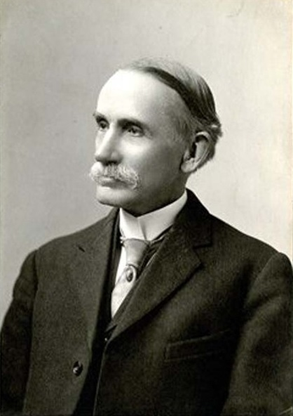

Джон Морис Кларк
1884-1963
1884-1963
Сын экономиста получил соответсвующее воспитание и обучение.
Параллельно преподаванию выпускал экономические труды.
Американская школа маржинализма
Институционная школа экономики
Докторская диссертация
Стандарты и разумность дискриминации при перевозках на местном уровне. (1910)
Принцип акселератора
Исследования по экономике накладных расходов (1923)
Институциональный подход
Цена мировой войны для американского народа (1931)
Экономика планирования общественных работ (1935)
Работоспособная конкуренция
К концепции работоспособной конкуренции (1940)
| Идеи Кларка | |
|
▼
|
|
▼
|
| Идеи кейнсианства | Антимонопольное закондательство |
Влиятельный человек в экономической науке.